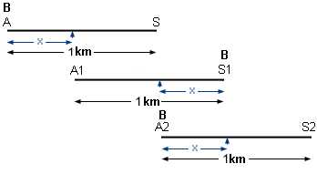

Lösung des Puzzles 18: Der Schäferhund und seine Herde
Boy muss 1 + √2 ≈ 2.414 Kilometer laufen.
Die Geschwindigkeit der Herde sei vH, diejenige von Boy sei vB.
Die Lösung kann mit Hilfe der drei oben dargestellten Situationen erfolgen.
1. Situation zur Zeit t=0: A sei Ende, S Spitze der Herde. Boy B befindet sich im Punkt A.
2. Situation zur Zeit t1: B befindet sich an der Spitze S1 der Herde. x sei der Weg, den das letzte Schaf
von A nach A1 in der Zeit t1 zurückgelegt hat. Dann gilt:
x = vH · t1 und 1 + x = vB · t1
3. Situation zur Zeit t1+ t2: B befindet sich wieder am Ende A2 der Herde. x ist auch der Weg, den B in t2
zurücklegt.
Dann gilt:
x = vB · t2 und 1 - x = vH · t2
Multipliziert man die zweite und die vierte Gleichung, so erhält man:
(1 + x) · (1 - x) = 1 - x2 = vB · t1 · vH · t2
Die rechte Seite dieser Gleichung ist aber mit Hilfe der ersten und dritten Gleichung gerade wieder x2.
Man hat also die reinquadratische Gleichung 1 - x2 = x2 zu lösen.
Da nur die positive Lösung in Frage kommt, so ist x = 1/√2. Die gesamte zurückgelegte Strecke von Boy
ist 1 + 2x, also folgt das oben angegebene Resultat.